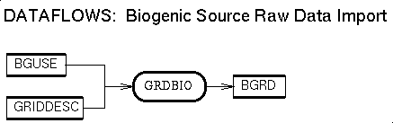
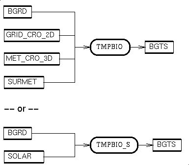

{kind=link}
{kind=link}
{kind=link}
{kind=link}
{kind=link}
{kind=link}
{kind=link}

Data flow diagrams describing normalized biogenic emissons processing are available for both the gridded case in Postscript, in GIF, in X bitmap, and in JPEG; and for the county-aggregated case, also in Postscript, in GIF, in X bitmap, and in JPEG.
Data flow diagrams describing temporal modeling for biogenic emissons are available in Postscript, in GIF, in X bitmap, and in JPEG.
| Description | Processing Order | Input Files | Input Params | Input Envt Vars |
| Output Files | Include File Params | Upcoming Features | Known Bugs | Usage |

Data flow diagrams for the data preparation and import of biogenic source processing are available in Postscript, in GIF, in X bitmap, and in JPEG; diagrams describing how GRDBIO fits into the totality of biogenic source processing are available in Postscript, in GIF, in X bitmap, and in JPEG.
# # set up environment variables (logical names of input files): # setenv BFAC <path-name for emission factors file> setenv BGUSE <path-name for county landuse file> setenv BGRD <path-name for normalized emissions file> # # now run the program, using a here-document to supply the input: # grdbio << EOF Yes, continue with the program BFAC ! emission factors file BGUSE ! county landuse file BGRD ! normalized emissions file EOF #
| Description | Processing Order | Input Files | Input Params | Input Envt Vars |
| Output Files | Include File Params | Upcoming Features | Known Bugs | Usage |
Data flow diagrams for the data preparation and import of biogenic source processing are available in Postscript, in GIF, in X bitmap, and in JPEG; diagrams describing how RAWBIO fits into the totality of biogenic source processing are available in Postscript, in GIF, in X bitmap, and in JPEG.
# # set up environment variables (logical names of input files, etc.): # setenv BFIP <path-name for FIP codes list file> setenv BFAC <path-name for emission factors file> setenv BGPRO <path-name for surrogate factors file> setenv BCUSE <path-name for county landuse file> setenv BGRD <path-name for normalized emissions file> setenv GRIDDESC <path-name for grid description file> setenv GRID <name for the output grid--e.g."NC_UTM_GRID"> # # now run the program, using a here-document to supply the input: # rawbio << EOF Yes, continue with the program BFIP ! FIP codes list BFAC ! emission factors file BGPRO ! surrogate factors file BCUSE ! county landuse file GRID ! name of output grid BGRD ! normalized biogenic emissions file 1 ! surrogate index for pine forest 1 ! surrogate index for deciduous forest 1 ! surrogate index for other coniferous forest 1 ! surrogate index for all other forest 1 ! surrogate index for agriculture 1 ! surrogate index for grasslands 1 ! surrogate index for wetlands 1 ! surrogate index for other land uses EOF #
| Description | Processing Order | Input Files | Input Params | Input Envt Vars |
| Output Files | Include File Params | Upcoming Features | Known Bugs | Usage |
Variant TMPBIO_S reads Dyntel format solar radiation/surface temperature data from file SOLAR instead of calculating it from MCIP/Models-3 files GRID_CRO_2D and MET_CRO_3D and surface met file SURMET. It does not calculate cloud attenuation on its own, assuming that it has already been considered in the construction of the SOLAR file.

Data flow diagrams for the data preparation and import of biogenic source processing are available in Postscript, in GIF, in X bitmap, and in JPEG; diagrams describing how TMPBIO fits into the totality of biogenic source processing are available in Postscript, in GIF, in X bitmap, and in JPEG.
# # set up environment variables (logical names of input files, etc.): # setenv BGRD <path-name for normalized emissions file> setenv GRID_CRO_2D <path-name for 2-D grid data file> setenv MET_CRO_3D <path-name for 3-D met file> setenv SURMET <path-name for surface met obs file> setenv BGTS <path-name for output file> setenv SURMET_INT_IDS <TRUE iff using WBAN station IDs> # # now run the program, using a here-document to supply the input: # tmpbio << EOF Yes, continue with the program BGRD ! normalized emissions file GRID_CRO_2D ! 2-D grid data file MET_CRO_3D ! 3-D met file SURMET ! surface met obs file BGTS ! output emissions file EOF #
BCUSE is the emissions prototype's BEIS2-format ASCII biogenic county land use file input to the RAWBIO normalized biogenic emissions program. BCUSE is an (portable, network transparent, machine architecture independent sequential ASCII) file with the following structure:
For each county:
a line with the FIPS code for that county
for each of the 4 land use types in the list
{ rural forest, urban forest, agriculture, other}:
a line with area (hectares) within the county devoted
to that land use type, and number of land use subtypes
occurring within the county for that land use type;
for each such land use subtypes:
a line with name of the land use subtypes as a
4-letter character string, and the area (hectares)
within the county devoted to that land use subtype
See also biogenic gridded land use file BGUSE.
BFAC is the emissions prototype's BEIS2 ASCII emissions factor file. BFAC is an (portable, network transparent, machine architecture independent sequential ASCII) file. It has lines of the form
FORMAT( 1X,
& A4, ! vegetation ID
& F9.0, ! ISOP emission factor
& F9.0, ! MONO emission factor
& F9.0, ! OVOC emission factor
& F6.0, ! NO emission factor
& I2 ) ! leaf area index
for the various BEIS2 land use categories modeled
BFIP is the emissions prototype's ASCII list of actually-occurring biogenic source county names, FIPS codes, and additional data. BFIP is an (portable, network transparent, machine architecture independent sequential ASCII) file. It is compatible with the UAM EPS BEIS USERIN file. The significant parts of the format are the following:
BGPRO is the emissions prototype's AIRS/AMS-format ASCII area/biogenic source gridding profile file. BGPRO is an (portable, network transparent, machine architecture independent sequential ASCII) file identical to the normal UAM EPS surrogate file and the AGPRO area source gridding profile file. See AGPRO's format specification for the definitions of the surrogate categories.
BGRD is the biogenic emissions prototype's biogenic source gridded normalized emissions file. It is a portable, network transparent, machine architecture independent direct access binary file produced by either of programs GRDBIO (on the basis of gridded BEIS2 land use BGUSE) and RAWBIO (on the basis of county level land use BCUSE) and used by TMPBIO. BGRD is time-independent, with values representing normalized emissions of NO and various VOC's, as well as gridded biomass and leaf area totals.
It is a time-independent EDSS/Models-3 I/O API files of type GRDDED3 (gridded) with dimensions appropriate for the model grid:
It is a time-stepped EDSS/Models-3 I/O API file of type GRDDED3 (gridded), with time step 1 hour, and dimensions appropriate for the model grid: the number of layers is 1, while the numbers NCOLS of columns and NROWS of rows are defined in the GRDIMS3.EXT include file. The variables in the file are a subset of the the gridded model species, representing hourly time stepped biogenic source emissions, in units of moles per hour. Names for the variables are the EMSPC names from the BIODIMS3.EXT include file. For the North Carolina domain UAM Carbon-Bond IV prototype, the list of variable names is the following:
BGUSE is the emissions prototype's BEIS2-format ASCII biogenic gridded land use file input to the GRDBIO gridded normalized biogenic emissions program. BGUSE is an (portable, network transparent, machine architecture independent sequential ASCII) file. Note that, unlike BCUSE, the data records in BGUSE all have list-directed formatting (e.g., quoted strings instead of free-form). BGUSE has the structure given below:
A header with
text metadata sections including the following:
"Introduction;"
"Grid Definition:"
"File Description:"
a list of "VEGID" names and descriptions,
formatted "(1X, A4, 3X, A)"
"Notes on VEGID:"
"Source of Data"
"Version:"
"ENDHEADER"
For each cell:
a line with the column, the row, and the cell area in hectares
for each of the 4 land use types in the list
{ rural forest, urban forest, agriculture, other}:
a line with area (hectares) within the county devoted
to that land use type, and number of land use subtypes
occurring within the county for that land use type;
for each such land use subtypes:
a line with name of the land use subtypes as a
4-letter quited character string, and the area (hectares)
within the county devoted to that land use subtype
See also biogenic county land use file BCUSE.
BGUSE is the emissions prototype's BEIS2-format ASCII SOLAR is the logical name for the Dyntel text file which stores hourly gridded solar radiation and surface temperature.
This file is a sequence of lines, each having the following data:
For each HOUR
for each COLUMN in the grid
for each ROW in the grid
data line for that hour, column, and row
BGUSE is the emissions prototype's BEIS2-format ASCII SURMET is the logical name for the EDSS/Models-3 text files which store hourly surface meteorology observations. SURMET data can be read cleanly in terms of EDSS/Models-3 conventions using routine READSMET().
There are two variations allowed in SURMET files. In the first (following the ROM2.2-and-later style), station IDs are 5-digit integer WBAN numbers; in the second, station IDs are 4-letter NWS character strings. READSMET() expects environment variable SURMET_INT_IDS to be set to TRUE in the former case, and FALSE in the latter.
Surface meteorology observation data as read by READSMET() has the following structure:
Up: Models -- Area, Point, Biogenic, Mobile
{kind=link}